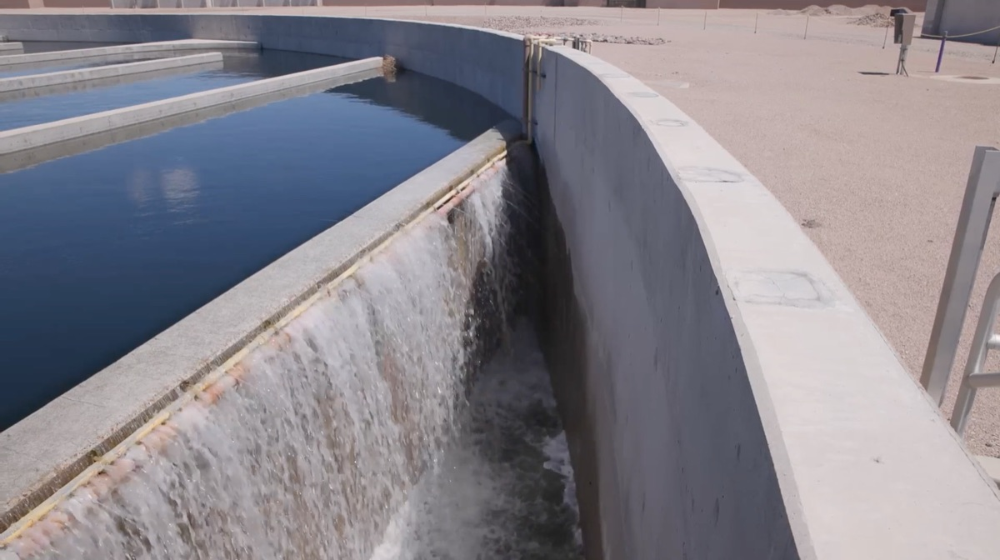
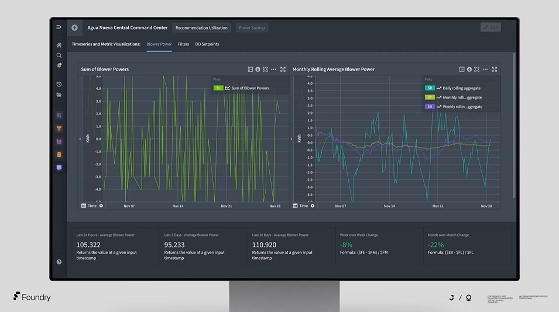
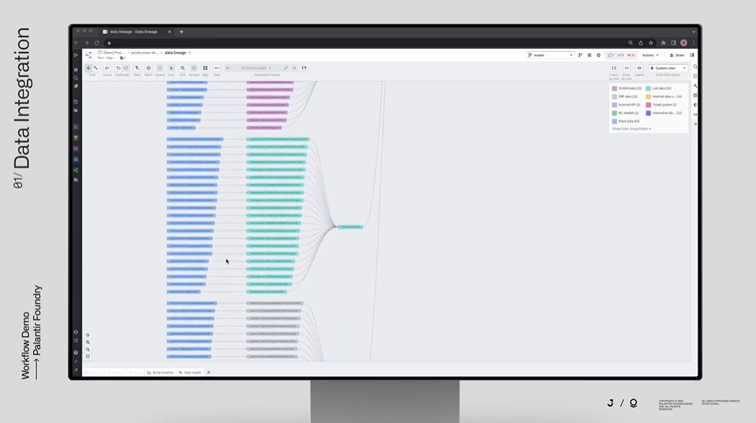
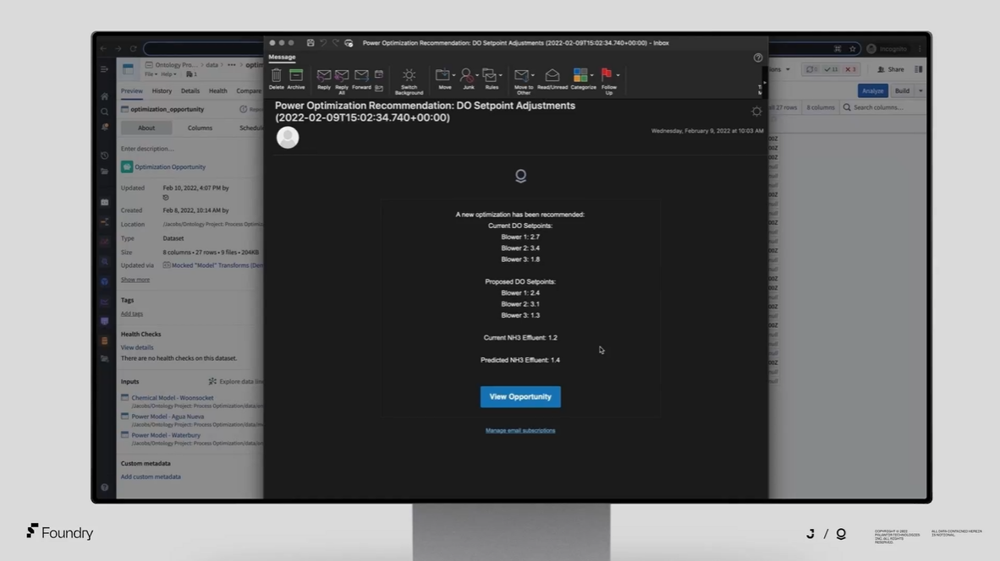
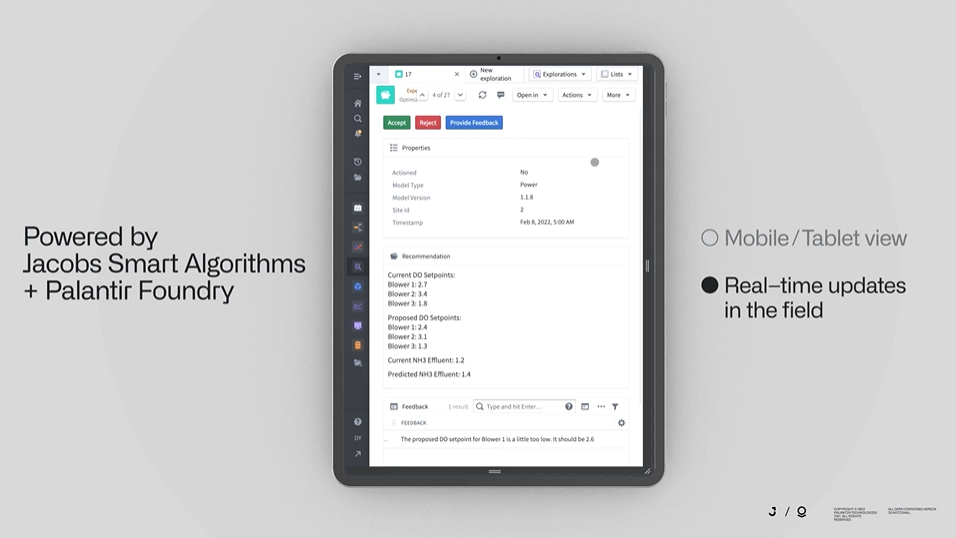
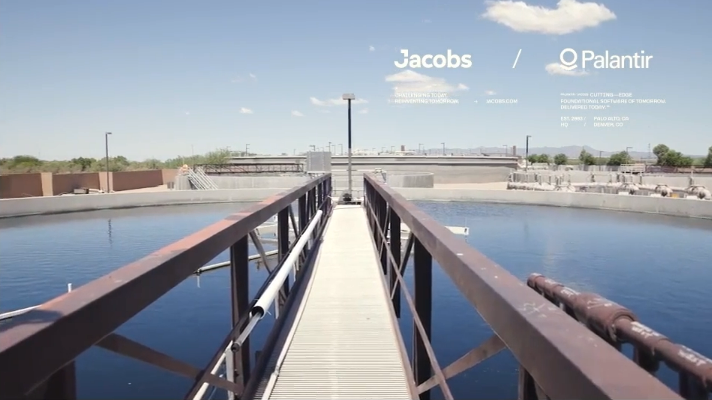

Jacobs + Palantir
Driving power savings at Agua Nueva with predictive modeling + operations.
Generating Real-World Impact
Global solutions firm Jacobs deployed Palantir Foundry at Agua Nueva Water Reclamation Site in Pima County, Arizona, to accelerate the site’s digital transformation and unlock predictive operations across the plant — a proof of concept that could scale across more Jacobs sites, and to their clients.
Results at Agua Nueva, an already-optimized plant:
20% plantwide power savings
Reduced electricity usage from ~2,000 KWh per million gallons treated to ~1,500 KWh per million gallons treated
Eliminated operational fines
Reduced greenhouse gas emissions
From Reactive to Proactive with Data-Driven Decision-Making
Across industries – from manufacturing to mining to water treatment – plant operations can remain largely reactive. In these cases, management is only alerted to issues when equipment malfunctions or retrospective reviews reveal underperformance. This creates dependencies on lagging performance indicators and a broader focus on troubleshooting, rather than proactive modeling and operations. Decision-makers need real-time visibility into plant operations with leading performance indicators that can help them optimize performance before it is too late.
When site staff operators in the field are bombarded with noisy SCADA systems and information overload, it is incredibly difficult to distill actionable insights, forcing operators to rely on gut-based, qualitative decision-making. Operators need technology tools that make their lives simpler, not more complex. They need IT that is customized to their day-to-day workflow and actually works in the field.
With the Palantir Foundry platform and Jacobs’s Smart Algorithms, plant management and site staff are armed with the practical data science tools needed to conduct proactive, data-driven operations, maximizing performance and cost savings plant-wide.

Blower Optimization Case Study
Blower Power Dashboard

Blowers consume the majority of electricity at water treatment plants and, therefore, represent a compelling opportunity for power, and cost, savings. Jacobs harnessed Foundry and their Smart Algorithms to build a solution that could optimize blowers across the entire Agua Nueva site. This workflow directly resulted in a ~20% reduction in electricity usage plantwide.
All data presented herein is notional.
Building in Foundry

To begin, Jacobs used Foundry to integrate real-time sensor data, lab data, CMMS data, Oracle financials, and more, using Foundry’s 200+ out-of-the-box data connectors. Then, with Foundry, data is cleaned on set schedules and transformed into standardized, easily interpretable data models, known as the Ontology. Using the Ontology, Jacobs tracks operator usage, electricity consumption, model error and drift, and more, all in a centralized platform.
Customized Email to Site Operators

Sensor data is then run through Jacobs’ process models, managed by a remote data scientist, to make real-time predictions on ammonia levels in the plant’s aeration basins. These are then compared against required compliance levels and mapped into simple, human-readable emails recommending updated set points for the blowers. Operators receive these email notifications twice daily, timed to their planning meetings, so they can easily review and quickly action blower optimization for maximum power savings.
Harnessing Foundry in the Field

Foundry unlocks real-time visibility and communication between site operators and data scientists, establishing a positive feedback loop between two previously siloed parties. When data scientists deploy models, these models are fed with real-time information from the plant, providing them with both current and forward-looking indicators to suggest set points for the blowers. Should the site be experiencing extenuating circumstances, operators are able to reject notifications and provide rich text feedback to data scientists for review. This ensures operators remain in ultimate control, while directly engaging with the data science insights they need to achieve optimal performance at the plant.
Scaling the Power of Connected OT and IT
The power savings resulting from blower optimization at Agua Nueva have demonstrated the power of connected IT and OT. With Foundry, Jacobs deploys process models to the field with a reliable, customizable suite of tooling that data scientists and operators can harness to drive direct collaboration and continued outperformance.

For detailed whitepapers on the following topics, please request access using the form below:
Water process optimization
SCADA connections/sensor data
Foundry overview
Security
Contact Us
Please see our Privacy Policy regarding how we handle this information.